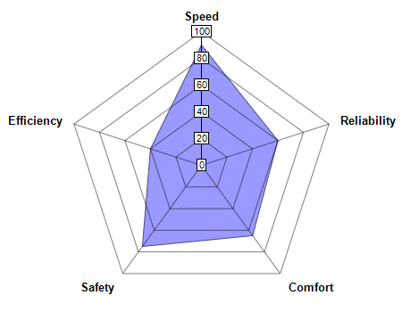

This example demonstrates the basic steps in creating radar charts.
- Create a PolarChart object using PolarChart.PolarChart.
- Specify the polar plot area of the chart using PolarChart.setPlotArea.
- Add a polar area layer and specify the data for the area using PolarChart.addAreaLayer.
- Specify the labels on the angular axis using AngularAxis.setLabels. In a polar/radar chart, the radial axis refers to the axis from the center to the perimeter of the plot area, and the angular axis refers to the axis lying on the perimeter of the plot area.
- Pass the chart to the CChartViewer for display using CChartViewer.setChart (MFC version) or QChartViewer.setChart (Qt version), or generate the chart as an image file using BaseChart.makeChart (Command Line version).
- Generate tool tips for the chart using BaseChart.getHTMLImageMap. (MFC/Qt version)